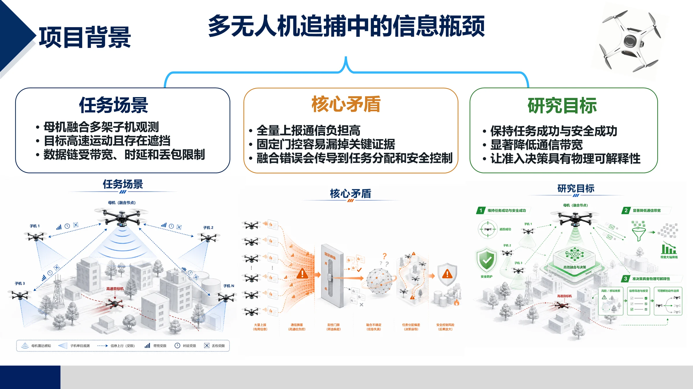
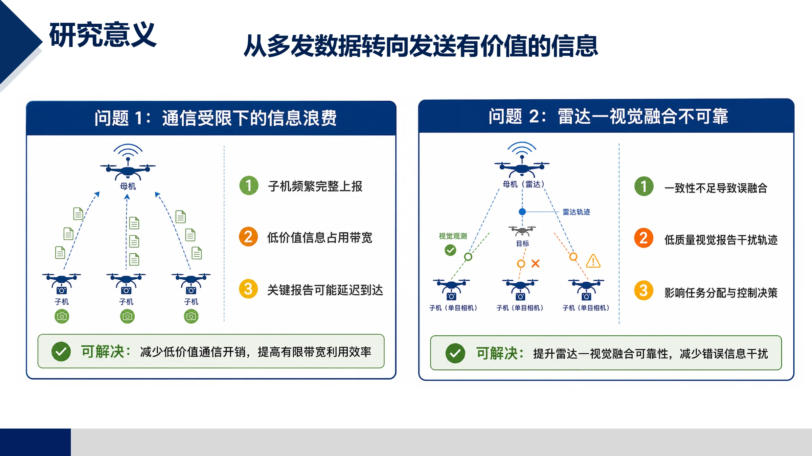
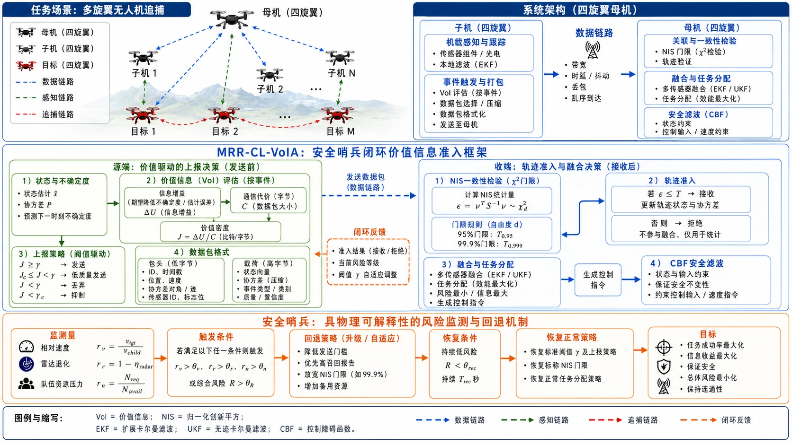
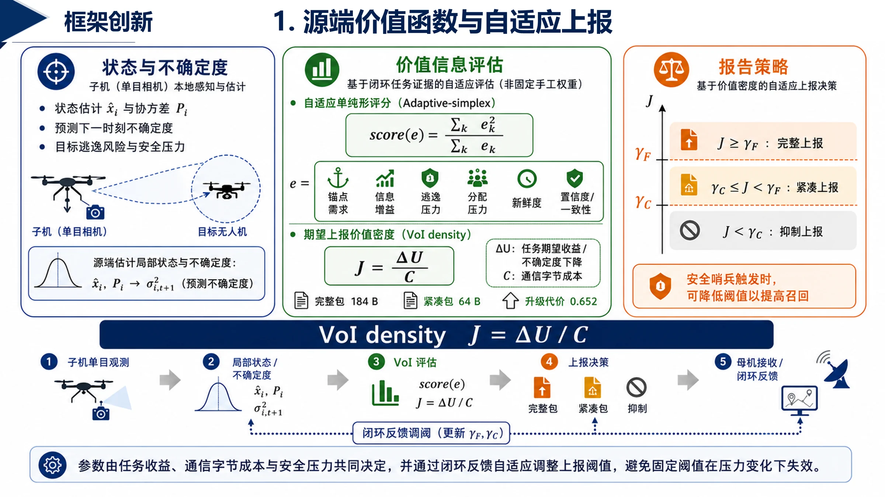
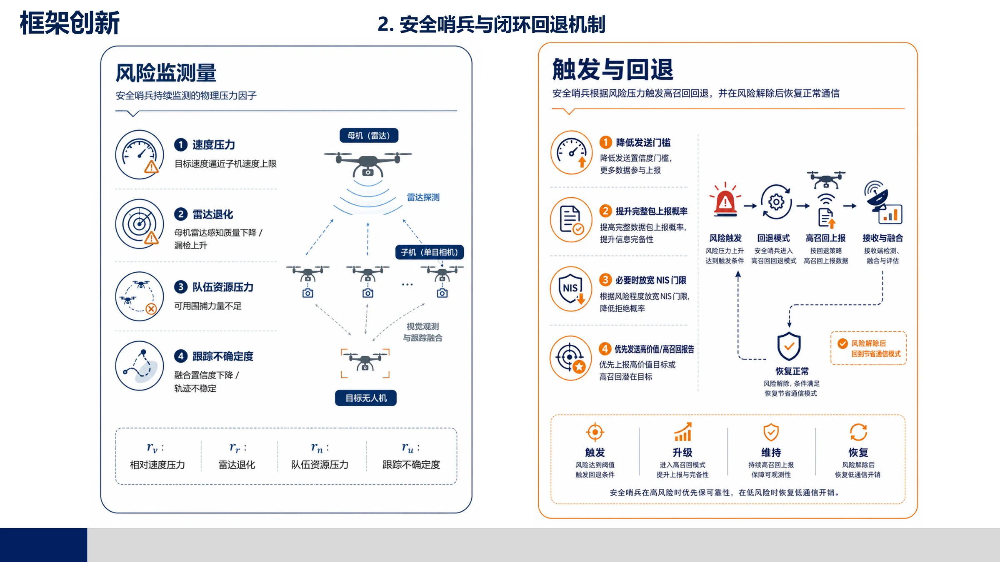

追捕状态快速变化，过期信息会直接影响任务分配。
任务成功率
93.49%
主实验平均任务成功率
完全安全成功率
93.33%
无碰撞、无越界、无安全违规
平均通信带宽
21.81kbps
在安全可靠前提下降低通信负载
01 · 项目背景与研究意义
有限通信条件下的关键证据准入。
多无人机追捕任务中，子机持续产生本地观测，母机需要在受限链路下完成轨迹融合与任务分配。带宽、时延、抖动、丢包和乱序会改变信息有效性，因此需要面向任务风险的信息筛选与准入机制。
全量通信并不等于可靠，低价值包会增加链路拥塞。
错误融合会传导到控制层，造成追捕失败或安全违规。


从
多发数据
转向
发送有价值的信息
最终服务
安全可靠追捕
02 · 研究内容与算法框架
闭环准入：源端选包，收端验信，安全兜底。
MRR-CL-VoIA 将任务风险、信息价值、通信代价和收端一致性纳入同一闭环，使有限带宽优先承载高风险、高价值和高可信观测。



源端决策
价值驱动上报
子机根据风险状态、信息增益、新鲜度、置信度和通信代价计算单位字节价值，并选择完整报告、紧凑报告、心跳保持或抑制上报。
输入：本地估计、协方差、观测质量
输出：按价值选择的数据包
目的：避免无差别全量上报
02+ · 算法原理
参数由风险归一化与通信代价建模确定。
价值函数由风险状态归一化、信息增益、通信代价和一致性准入共同决定。其基本原则是：风险越高、信息越新且越可信，越应优先传输；通信代价越高且信息价值越低，越应采用压缩或抑制策略。
源端 VoI 评分
计算单位字节价值，让数据包先在源端被筛选。
J = ΔU / C- ΔU：预期不确定度下降与任务风险收益。
- C：完整包、紧凑包、心跳包的通信代价。
收端 NIS 准入
母机不直接融合所有包，而是先判断创新是否一致。
ε = νTS-1ν- 一致且新鲜：接受并融合。
- 可疑但有价值：降权保留。
- 明显异常：拒绝进入融合。
安全哨兵回退
风险升高时主动保守，不为了省通信牺牲安全。
rv, rr, rn → fallback- 高速、雷达退化、队伍资源紧张触发回退。
- 低风险持续一段时间后恢复标准策略。
交互式 VoI 决策实验台
风险调节与上报策略响应
点击典型场景或拖动变量，页面会同步更新源端包型、链路占用和收端处理方式，展示价值驱动上报与固定比例节流之间的机制差异。
价值评分
0.00
紧凑报告
信息仍有价值，但通信代价需要控制，发送紧凑包。
源端：发送紧凑报告
链路：压缩证据、控制字节数
收端：准入后低成本融合
03 · 项目成果与实验结果
主结果：在保持安全可靠性的同时降低通信负载。
实验覆盖 21 个压力单元、每单元 30 个配对随机种子、5 种方法、每方法 630 个 episode，并在同一压力矩阵下同时比较任务成功率、完全安全成功率和通信带宽。
速度、丢包、雷达退化、障碍密度、队伍规模。
配对随机种子，降低随机场景偏差。
MRR-CL-VoIA、Event-NIS、Rand-Mix、NIS-99.9、All-Full。
完整主实验统计和动态图生成。
对照分析：All-Full
全量上报通信更重，而且低价值或不一致证据可能干扰融合。本文方法在关键时刻保留信息，在非关键时刻节省链路。
对照分析：Rand-Mix
Rand-Mix 让包型比例和本文方法接近且带宽略高，但没有风险状态闭环，因此安全成功率仍然落后。
对照分析：固定 NIS
固定门控无法根据雷达退化、高速逃逸和队伍压力自适应调整准入，容易在关键场景错过证据。
03+ · 动态展示视频
动态过程展示：同场景带宽与融合误差演化。
动态视频分别展示通信负载和融合误差随时间变化的过程，用于说明 MRR-CL-VoIA 如何在低通信条件下保持稳定的融合质量。
视频 1
全算法带宽动态对比
展示不同方法在同场景窗口下的瞬时通信负载，突出 MRR-CL-VoIA 如何把带宽集中到关键阶段。
视频 2
全算法融合误差动态对比
展示同一时刻不同方法的估计误差变化，说明本文方法在低通信下仍保持可用的融合质量。
视频 3
项目展示补充视频
展示项目整体演示素材，用于补充说明系统运行形态和最终展示效果。
最终总结
MRR-CL-VoIA 的一句话价值
在有限通信条件下，系统优先传输关键、新鲜、可信且安全相关的信息，从而支撑多无人机安全可靠追捕。